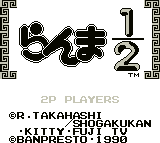
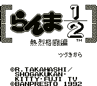
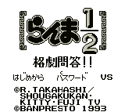

Ranma 1/2 (VGB)

Despite the poor graphics, this game is very entertaining. You must retrieve
three items (a ribbon, a hat, and some gloves) to have Akane appear. Once
Akane appears, you must tag her to complete the level. In order to get these
items, you must push around boxes, rocks, and logs to get to them. Boxes and
rocks can be broken, but to remove logs, you must push two or more of them
togther. Of course, Ranma's rivals and "girlfriends" are chasing him around
trying to stop him.
The puzzles are quite challenging at times. Boxes can be broken open to
reveal hot or cold water. These can change you back and forth from male
to female Ranma. Male Ranma causes objects to move until they hit something
else. Female Ranma can only move objects one spot at a time. You must
figure out when each form is appropriate. With 50 different puzzles to
solve, you won't lose interest in this one for awhile. Besides the poor
graphics, my only other complaint is that there is no password or saving
options. You have three continues at your disposal, but no way to stop the
game and come back to it later.
Ranma 1/2, part 2 (VGB)

This is a side-scrolling fighting and puzzle game. Ranma walks around trying
to solve a puzzle, which usually invovles finding someone or something.
Occasionally, you will run into someone who wants to fight. The fights use
standard punches and kicks; I haven't found any special moves yet. I cannot
rate the game because I cannot get past Kuno's maze in level 2. Help on this
level would be appreciated.
| LEVEL |
PASSWORD |
| Level 2 |
Akane/Kunou/Akane |
| Level 3 |
Ryouga/Ukyou/Mousse |
| Level 4 |
Shampoo/Kodachi/Ranma |
| Level 5 |
Ryouga/Shampoo/Ukyou |
| Sound Test |
Ranma/Akane/Mousse |
| Battle Test Mode |
Ukyou/Ryouga/Ranma |
| Inset Image Test Mode |
Kunou/Ranma/Ukyou |
Ranma 1/2: Kakugeki Mondai! (VGB)

According to the anime video games list, this is some sort of puzzle game.
Return to Emulator Table of Contents
Last Modified 7 April 1997
Created 2 Sept 1996
Luis A. Cruz
cruzl@ccs.neu.edu